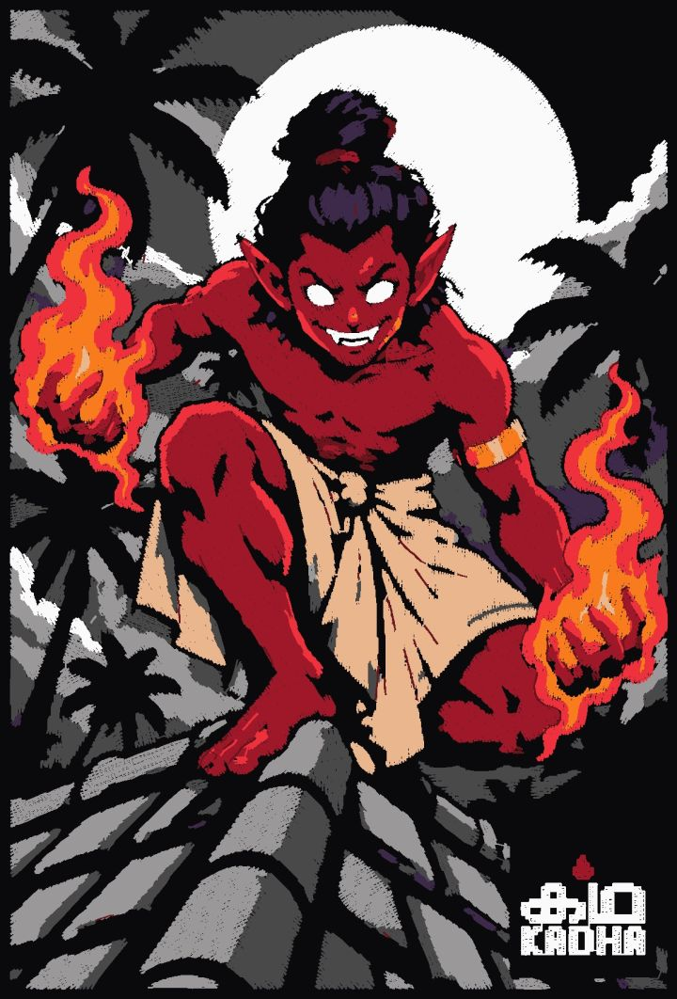
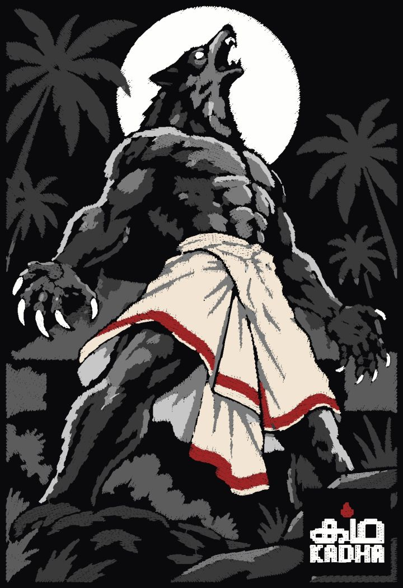
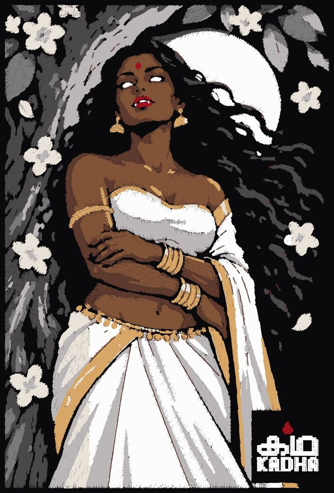
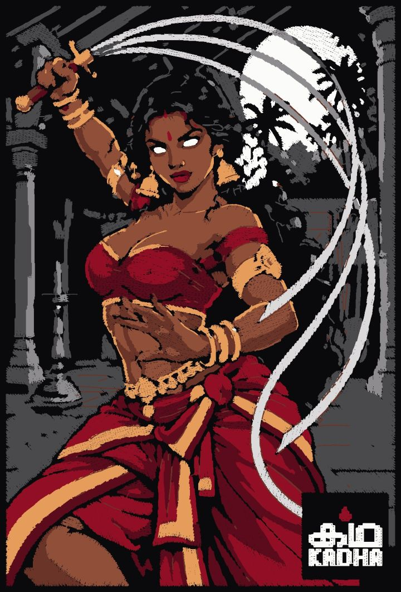
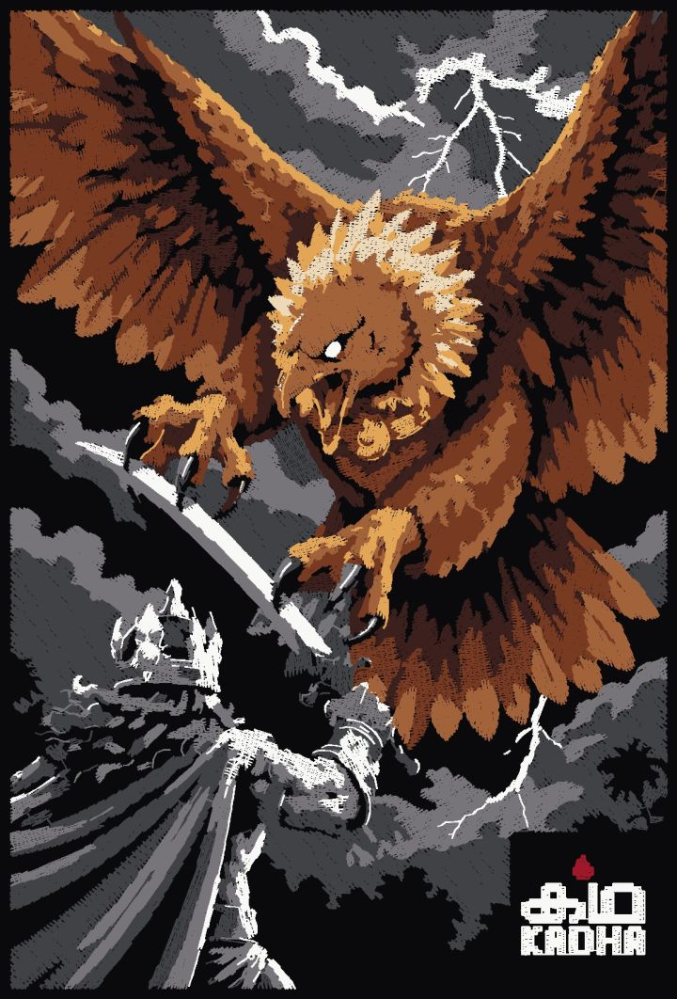
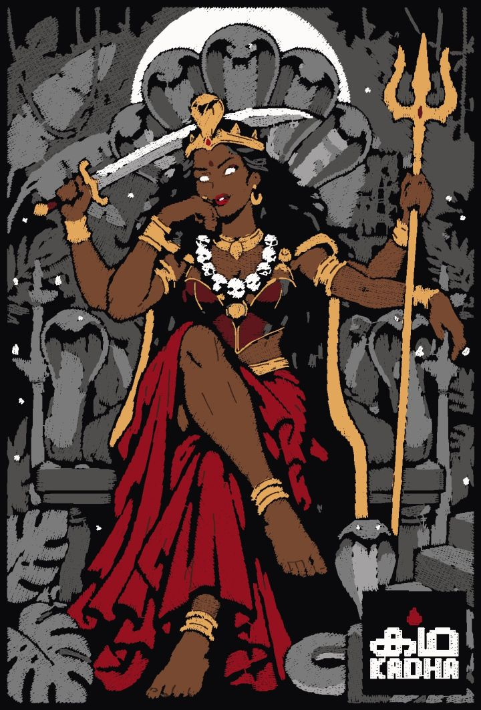

Chaathan
ചാത്തൻ
A child-spirit called by sorcerers. Stones fall from nowhere, fires light themselves. Treat him well, or he plays tricks forever.
Kadha means story. Every Kadha design starts with a tale told at home: spirits, shape-shifters, warriors. We turn them into bold embroidery on black, in small numbered runs.
Get early access
Six tales for the first drop. Images are stitch previews; real photos replace them as each piece is made.
A child-spirit called by sorcerers. Stones fall from nowhere, fires light themselves. Treat him well, or he plays tricks forever.

In Malabar, the night had shape-shifters. A bull, a cat, a jackal, never a man. Villagers barred their doors after dark.

If you smell pala flowers at night, keep walking. She waits under the tree in white, and asks a traveller for lime.

Heroine of the northern ballads, master of kalari and the urumi, the sword that bends. Bandits stopped her once. Only once.

Old and alone, he flew at Ravana to save Sita. His wings were cut, and he fell on a rock in Kollam that still carries his name.

When the demon Darika could not be stopped, she rose from fire. Kerala still re-tells it every year in Mudiyettu.
Black is never stitched: the fabric itself is the night in every design.
We start from the tale, not a trend.
An original Kadha design, built for thread from the first line.
Every colour, angle and layer planned, around 45,000 stitches a piece.
Embroidered in Kerala, numbered, and not remade once sold out.
Small numbered runs. The list hears first, and gets first pick of the numbers.